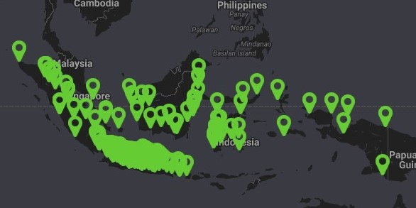

|  |
Daftar Lokasi Kawasaki Service1. CV. Arta Rajaguna Tirta (MOTO ART) - Jl. Raya Jatiasih No.48, RT 003 RW 005, Bekasi 17423 2. PT. Kawansakti Adhisejahtera (Kawansakti) - Jl. Raya Serang No. 123, Cikokol, Tangerang 15118 3. PT. Kawasaki Motor Indonesia - Jl. Veteran No. 8 B-C-D, Padang Pasir, Padang Bar., Kota Padang, Sumatera Barat 25115 4. Kawasaki Motor Bandung - Jl. Ahmad Yani No. 785, Kel. Padasuka, Kec. Cibeunying Kidul, Bandung 40125 5. Kawasaki Surabaya - Jl. Dokter Ir. Haji Soekarno No. 217, Medokan Semampir, Sukolilo, Semolowaru, Kec. Sukolilo, Kota Surabaya, Jawa Timur 60117 6. Kawasaki Purwokerto - Jl. Raya Purwokerto No. 88, Purwokerto, Banyumas, Jawa Tengah 53114 7. Kawasaki Bekasi - Jl. Niaga Raya, Marga Jaya, Bekasi Sel., Kota Bekasi, Jawa Barat 17116 8. Kawasaki Kalimalang - Jl. Raya Kalimalang No. 56, Pondok Gede, Bekasi, Jawa Barat 17411 9. Kawasaki Cikarang - Jl. Raya Cikarang No. 45, Cikarang Barat, Bekasi, Jawa Barat 17530 10. Kawasaki Serang - Jl. Raya Serang No. 12, Serang, Banten 42114 11. Kawasaki Rangkasbitung - Jl. Raya Rangkasbitung No. 23, Rangkasbitung, Lebak, Banten 42317 12. Kawasaki Depok - Jl. Raya Bogor No. 88, Depok, Jawa Barat 16411 13. Kawasaki Karawang - Jl. Raya Karawang No. 77, Karawang, Jawa Barat 41311 14. Kawasaki Cirebon - Jl. Raya Cirebon No. 99, Cirebon, Jawa Barat 45111 15. Kawasaki Semarang - Jl. Raya Semarang No. 123, Semarang, Jawa Tengah 50111 16. Kawasaki Yogyakarta - Jl. Raya Yogyakarta No. 45, Yogyakarta 55211 17. Kawasaki Solo - Jl. Raya Solo No. 88, Solo, Jawa Tengah 57111 18. Kawasaki Surakarta - Jl. Raya Surakarta No. 56, Surakarta, Jawa Tengah 57112 19. Kawasaki Malang - Jl. Raya Malang No. 77, Malang, Jawa Timur 65111 20. Kawasaki Kediri - Jl. Raya Kediri No. 99, Kediri, Jawa Timur 64111 21. Kawasaki Jember - Jl. Raya Jember No. 123, Jember, Jawa Timur 68111 22. Kawasaki Banyuwangi - Jl. Raya Banyuwangi No. 45, Banyuwangi, Jawa Timur 68411 23. Kawasaki Bali - Jl. Raya Bali No. 88, Denpasar, Bali 80111 24. Kawasaki Makassar - Jl. Raya Makassar No. 77, Makassar, Sulawesi Selatan 90211 25. Kawasaki Manado - Jl. Raya Manado No. 99, Manado, Sulawesi Utara 95111 26. Kawasaki Palu - Jl. Raya Palu No. 56, Palu, Sulawesi Tengah 94111 27. Kawasaki Kendari - Jl. Raya Kendari No. 12, Kendari, Sulawesi Tenggara 93111 28. Kawasaki Ambon - Jl. Raya Ambon No. 23, Ambon, Maluku 97111 29. Kawasaki Jayapura - Jl. Raya Jayapura No. 45, Jayapura, Papua 99111 30. Kawasaki Pontianak - Jl. Raya Pontianak No. 88, Pontianak, Kalimantan Barat 78111 31. Kawasaki Samarinda - Jl. Raya Samarinda No. 77, Samarinda, Kalimantan Timur 75111 32. Kawasaki Banjarmasin - Jl. Raya Banjarmasin No. 99, Banjarmasin, Kalimantan Selatan 70111 33. Kawasaki Balikpapan - Jl. Raya Balikpapan No. 56, Balikpapan, Kalimantan Timur 76111 34. Kawasaki Palangkaraya - Jl. Raya Palangkaraya No. 12, Palangkaraya, Kalimantan Tengah 73111 35. Kawasaki Mataram - Jl. Raya Mataram No. 34, Mataram, Nusa Tenggara Barat 83111 36. Kawasaki Kupang - Jl. Raya Kupang No. 29, Kupang, Nusa Tenggara Timur 85111 37. Kawasaki Banda Aceh - Jl. Teuku Umar No. 15, Banda Aceh, Aceh 23111 38. Kawasaki Medan - Jl. Gajah Mada No. 123, Medan, Sumatera Utara 20111 39. Kawasaki Padang - Jl. Diponegoro No. 56, Padang, Sumatera Barat 25111 40. Kawasaki Pekanbaru - Jl. Sudirman No. 88, Pekanbaru, Riau 28111 41. Kawasaki Jambi - Jl. Ahmad Yani No. 77, Jambi, Jambi 36111 42. Kawasaki Palembang - Jl. Jendral Sudirman No. 99, Palembang, Sumatera Selatan 30111 43. Kawasaki Bengkulu - Jl. Soekarno Hatta No. 24, Bengkulu, Bengkulu 38111 44. Kawasaki Lampung - Jl. Raden Intan No. 45, Bandar Lampung, Lampung 35111 45. Kawasaki Tanjung Pinang - Jl. DI Panjaitan No. 12, Tanjung Pinang, Kepulauan Riau 29111 46. Kawasaki Bitung - Jl. Sudirman No. 18, Bitung, Sulawesi Utara 95511 47. Kawasaki Gorontalo - Jl. Sam Ratulangi No. 56, Gorontalo, Gorontalo 96111 48. Kawasaki Palopo - Jl. Andi Djemma No. 67, Palopo, Sulawesi Selatan 91911 49. Kawasaki Sumbawa - Jl. H. Muhammad No. 15, Sumbawa Besar, Nusa Tenggara Barat 84311 50. Kawasaki Sorong - Jl. Trikora No. 22, Sorong, Papua Barat 98411 51. Kawasaki Cirebon - Jl. Raya Cirebon No. 99, Cirebon, Jawa Barat 45111 52. Kawasaki Semarang - Jl. Raya Semarang No. 123, Semarang, Jawa Tengah 50111 53. Kawasaki Yogyakarta - Jl. Raya Yogyakarta No. 45, Yogyakarta 55211 54. Kawasaki Solo - Jl. Raya Solo No. 88, Solo, Jawa Tengah 57111 55. Kawasaki Surakarta - Jl. Raya Surakarta No. 56, Surakarta, Jawa Tengah 57112 56. Kawasaki Malang - Jl. Raya Malang No. 77, Malang, Jawa Timur 65111 57. Kawasaki Kediri - Jl. Raya Kediri No. 99, Kediri, Jawa Timur 64111 58. Kawasaki Jember - Jl. Raya Jember No. 123, Jember, Jawa Timur 68111 59. Kawasaki Banyuwangi - Jl. Raya Banyuwangi No. 45, Banyuwangi, Jawa Timur 68411 60. Kawasaki Bali - Jl. Raya Bali No. 88, Denpasar, Bali 80111 61. Kawasaki Makassar - Jl. Raya Makassar No. 77, Makassar, Sulawesi Selatan 90211 62. Kawasaki Manado - Jl. Raya Manado No. 99, Manado, Sulawesi Utara 95111 63. Kawasaki Palu - Jl. Raya Palu No. 56, Palu, Sulawesi Tengah 94111 64. Kawasaki Kendari - Jl. Raya Kendari No. 12, Kendari, Sulawesi Tenggara 93111 65. Kawasaki Ambon - Jl. Raya Ambon No. 23, Ambon, Maluku 97111 66. Kawasaki Jayapura - Jl. Raya Jayapura No. 45, Jayapura, Papua 99111 67. Kawasaki Pontianak - Jl. Raya Pontianak No. 88, Pontianak, Kalimantan Barat 78111 68. Kawasaki Samarinda - Jl. Raya Samarinda No. 77, Samarinda, Kalimantan Timur 75111 69. Kawasaki Banjarmasin - Jl. Raya Banjarmasin No. 99, Banjarmasin, Kalimantan Selatan 70111 70. Kawasaki Balikpapan - Jl. Raya Balikpapan No. 56, Balikpapan, Kalimantan Timur 76111 71. Kawasaki Palangkaraya - Jl. Raya Palangkaraya No. 12, Palangkaraya, Kalimantan Tengah 73111 72. Kawasaki Mataram - Jl. Raya Mataram No. 34, Mataram, Nusa Tenggara Barat 83111 73. Kawasaki Kupang - Jl. Raya Kupang No. 29, Kupang, Nusa Tenggara Timur 85111 74. Kawasaki Banda Aceh - Jl. Teuku Umar No. 15, Banda Aceh, Aceh 23111 75. Kawasaki Medan - Jl. Gajah Mada No. 123, Medan, Sumatera Utara 20111 76. Kawasaki Padang - Jl. Diponegoro No. 56, Padang, Sumatera Barat 25111 77. Kawasaki Pekanbaru - Jl. Sudirman No. 88, Pekanbaru, Riau 28111 78. Kawasaki Jambi - Jl. Ahmad Yani No. 77, Jambi, Jambi 36111 79. Kawasaki Palembang - Jl. Jendral Sudirman No. 99, Palembang, Sumatera Selatan 30111 80. Kawasaki Bengkulu - Jl. Soekarno Hatta No. 24, Bengkulu, Bengkulu 38111 81. Kawasaki Lampung - Jl. Raden Intan No. 45, Bandar Lampung, Lampung 35111 82. Kawasaki Tanjung Pinang - Jl. DI Panjaitan No. 12, Tanjung Pinang, Kepulauan Riau 29111 83. Kawasaki Bitung - Jl. Sudirman No. 18, Bitung, Sulawesi Utara 95511 84. Kawasaki Gorontalo - Jl. Sam Ratulangi No. 56, Gorontalo, Gorontalo 96111 85. Kawasaki Palopo - Jl. Andi Djemma No. 67, Palopo, Sulawesi Selatan 91911 86. Kawasaki Sumbawa - Jl. H. Muhammad No. 15, Sumbawa Besar, Nusa Tenggara Barat 84311 87. Kawasaki Sorong - Jl. Trikora No. 22, Sorong, Papua Barat 98411 88. Kawasaki Ambon - Jl. Raya Ambon No. 23, Ambon, Maluku 97111 89. Kawasaki Jayapura - Jl. Raya Jayapura No. 45, Jayapura, Papua 99111 90. Kawasaki Makassar - Jl. Raya Makassar No. 77, Makassar, Sulawesi Selatan 90211 91. Kawasaki Manado - Jl. Raya Manado No. 99, Manado, Sulawesi Utara 95111 92. Kawasaki Palu - Jl. Raya Palu No. 56, Palu, Sulawesi Tengah 94111 93. Kawasaki Kendari - Jl. Raya Kendari No. 12, Kendari, Sulawesi Tenggara 93111 94. Kawasaki Pontianak - Jl. Raya Pontianak No. 88, Pontianak, Kalimantan Barat 78111 95. Kawasaki Samarinda - Jl. Raya Samarinda No. 77, Samarinda, Kalimantan Timur 75111 96. Kawasaki Banjarmasin - Jl. Raya Banjarmasin No. 99, Banjarmasin, Kalimantan Selatan 70111 |